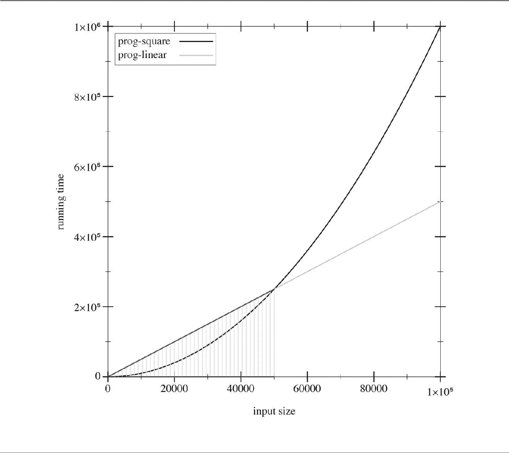
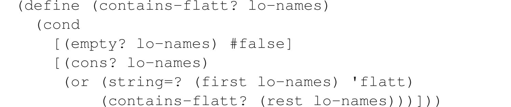
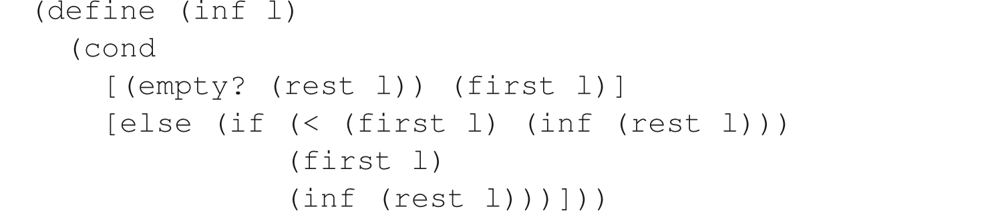
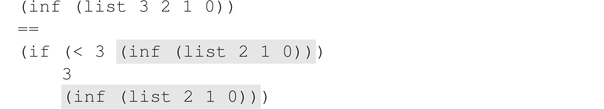
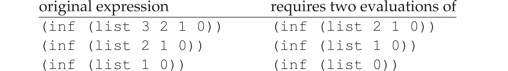
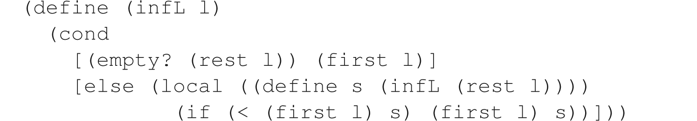
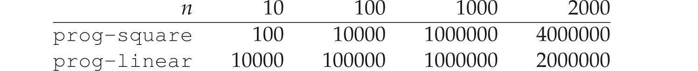
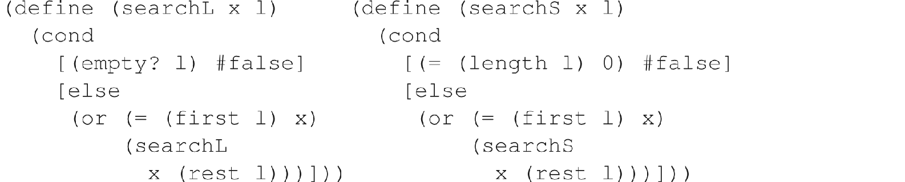
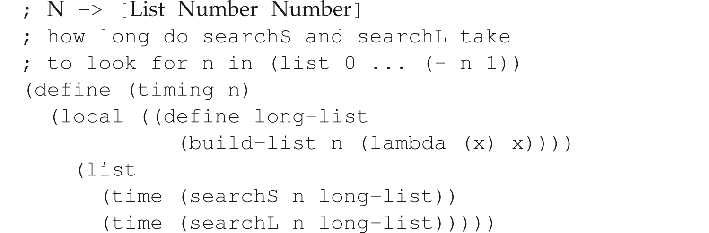

INTERMEZZO 5: THE COST OF COMPUTATION
What do you know about program f once the following tests succeed:
(check-expect (f 0) 0)
(check-expect (f 1) 1)
(check-expect (f 2) 8)
If this question showed up on a standard test, you might respond with this:
(define (f x) (expt x 3))
But nothing speaks against the following:
(define (f x) (if (= x 2) 8 (* x x)))
Tests tell you only that a program works as expected on some inputs.
In the same spirit, timing the evaluation of a program application for specific inputs tells you how long it takes to compute the answers for those inputs—and nothing else. You may have two programs—prog-linear and prog-square—that compute the same answers when given the same inputs, and you may find that for all chosen inputs, prog-linear always computes the answer faster than prog-square. Chapter 26.4 presents just such a pair of programs: gcd, a structurally recursive program, and gcd-generative, an equivalent but generative-recursive program. The timing comparison suggests that the latter is much faster than the former.
You may also wish to reread chapter 16.2 and the discussion of integrity checks in chapter 23.7.
How confident are you that you wish to use prog-linear instead of prog-square? Consider the graph in figure 176. In this graph, the x-axis records the size of the input—say, the length of a list—and the y-axis records the time it takes to compute the answer for an input of a specific size. Assume that the straight line represents the running time of prog-linear and the curved graph represents prog-square. In the shaded region, prog-linear takes more time than prog-square, but at the edge of this region the two graphs cross, and to its right the performance of prog-square is worse than that of prog-linear. If, for whatever reasons, you had evaluated the performance of prog-linear and prog-square only for input sizes in the shaded region and if your clients were to run your program mostly on inputs that fall in the nonshaded region, you would be delivering the wrong program.

Figure 176: A comparison of two running time expressions
This intermezzo introduces the idea of algorithmic analysis, which allows programmers to make general statements about a program’s performance and everyone else about the growth of a function. Any serious programmer and scientist must eventually become thoroughly familiar with this notion. It is the basis for analyzing performance attributes of programs. To understand the idea properly, you will need to work through a text book.
We thank Prabhakar Ragde for sharing his notes on connecting the first edition of this book with algorithmic analysis.
Concrete Time, Abstract Time
Chapter 26.4 compares the running time of gcd and gcd-generative. In addition, it argues that the latter is better because it always uses fewer recursive steps than the former to compute an answer. We use this idea as the starting point to analyze the performance of how-many, a simple program from chapter 9:
(define (how-many a-list)
(cond
[(empty? a-list) 0]
[else (+ (how-many (rest a-list)) 1)]))
Suppose we want to know how long it takes to compute the length of some unknown, non-empty list. Using the rules of computation from intermezzo 1, we can look at this process as a series of algebraic manipulations:
(how-many some-non-empty-list)
==
(cond
[(empty? some-non-empty-list) 0]
[else (+ (how-many (rest some-non-empty-list)) 1)])
==
(cond
[#false 0]
[else (+ (how-many (rest some-non-empty-list)) 1)])
==
(cond
[else (+ (how-many (rest some-non-empty-list)) 1)])
==
(+ (how-many (rest some-non-empty-list)) 1)
The first step is to replace a-list in the definition of how-many with the actual argument, some-non-empty-list, which yields the first cond expression. Next we must evaluate
(empty? some-non-empty-list)
By assumption the result is #false. The question is how long it takes to determine this result. While we don’t know the precise amount of time, it is safe to say that checking on the constructor of a list takes a small and fixed amount of time. Indeed, this assumption also holds for the next step, when cond checks what the value of the first condition is. Since it is #false, the first cond line is dropped. Checking whether a cond line starts with else is equally fast, which means we are left with
(+ (how-many (rest some-non-empty-list)) 1)
Finally we may safely assume that rest extracts the remainder of the list in a fixed amount of time, but otherwise it looks like we are stuck. To compute how long how-many takes to determine the length of some list, we need to know how long how-many takes to count the number of items in the rest of that list.
Alternatively, if we assume that predicates and selectors take some fixed amount of time, the time it takes how-many to determine the length of a list depends on the number of recursive steps it takes. Somewhat more precisely, evaluating (how-many some-list) takes roughly n times some fixed amount where n is the length of the list or, equivalently, the number of times the program recurs.
Generalizing from this example suggests that the running time depends on the size of the input and that the number of recursive steps is a good estimate for the length of an evaluation sequence. For this reason, computer scientists discuss the abstract running time of a program as a relationship between the size of the input and the number of recursive steps in an evaluation. In our first example, the size of the input is the number of items on the list. Thus, a list of one item requires one recursive step, a list of two needs two steps, and for a list of n items, it’s n steps.
“Abstract” because the measure ignores the details of how much time primitive steps take.
Computer scientists use the phrase a program f takes “on the order of n steps” to formulate a claim about the abstract running time of f. To use the phrase correctly, it must come with an explanation of n, for example, “it counts the number of items on the given list” or “it is the number of digits in the given number.” Without such an explanation, the original phrase is actually meaningless.
Not all programs have the kind of simple abstract running time as how-many. Take a look at the first recursive program in this book:

For a list that starts with 'flatt, say,
(contains-flatt?
(list 'flatt 'robot 'ball 'game-boy 'pokemon))
the program requires no recursive steps. In contrast, if 'flatt occurs at the end of the list, as in,
(contains-flatt?
(list 'robot 'ball 'game-boy 'pokemon 'flatt))
the evaluation needs as many recursive steps as there are items in the list.
This second analysis brings us to the second important idea of program analysis, namely, the kind of analysis that is performed:
• A best-case analysis focuses on the class of inputs for which the program can easily find the answer. In our running example, a list that starts with 'flatt is the best kind of input.
• In turn, a worst-case analysis determines how badly a program performs for those inputs that stress it most. The contains-flatt? function exhibits its worst performance when 'flatt is at the end of the input list.
• Finally, an average analysis starts from the ideas that programmers cannot assume that inputs are always of the best possible shape and that they must hope that the inputs are not of the worst possible shape. In many cases, they must estimate the average time a program takes. For example, contains-flatt? finds, on the average, 'flatt somewhere in the middle of the input list. Thus, if the latter consists of n items, the average running time of contains-flatt? is n/2, that is, it recurs half as often as there are items on the input.
Computer scientists therefore usually employ the “on the order of” phrase in conjunction with “on the average” or “in the worst case.”
Returning to the idea that contains-flatt? uses, on the average, an “order of n/2 steps” brings us to one more characteristic of abstract running time. Because it ignores the exact time it takes to evaluate primitive computation steps—checking predicates, selecting values, picking cond clauses—we can drop the division by 2. Here is why. By assumption, each basic step takes k units of time, meaning contains-flatt? takes time
If you had a newer computer, these basic computations may run twice as fast, in which case we would use k/2 as the constant for basic work. Let’s call this constant c and calculate:
that is, the abstract running time is always n multiplied by a constant, and that’s all that matters to say “on the order of n.”
Now consider our sorting program from figure 72. Here is a hand-evaluation for a small input, listing all recursive steps:
(sort (list 3 1 2))
== (insert 3 (sort (list 1 2)))
== (insert 3 (insert 1 (sort (list 2))))
== (insert 3 (insert 1 (insert 2 (sort '()))))
== (insert 3 (insert 1 (insert 2 '())))
== (insert 3 (insert 1 (list 2)))
== (insert 3 (cons 2 (insert 1 '())))
== (insert 3 (list 2 1))
== (insert 3 (list 2 1))
== (list 3 2 1)
The evaluation shows how sort traverses the given list and how it sets up an application of insert for each number in the list. Put differently, sort is a two-phase program. During the first one, the recursive steps for sort set up as many applications of insert as there are items in the list. During the second phase, each application of insert traverses a sorted list.
Inserting an item is similar to finding one, so it is not surprising that the performance of insert and contains-flatt? are alike. The applications of insert to a list of l items triggers between 0 and l recursive steps. On the average, we assume it requires l/2, which means that insert takes “on the order of l steps” where l is the length of the given list.
The question is how long these lists are to which insert adds numbers. Generalizing from the above calculation, we can see that the first one is n − 1 items long, the second one n − 2, and so on, all the way down to the empty list. Hence, we get that insert performs
meaning
represents the best “guess” at the average number of insertion steps. In this last term, n2 is the dominant factor, and so we say that a sorting process takes “on the order of n2 steps.” Exercise 486 ask you to argue why it is correct to simplify this claim in this way.
See exercise 486 for why this is the case.
We can also proceed with less formalism and rigor. Because sort uses insert once per item on the list, we get an “order of n” insert steps where n is the size of the list. Since insert needs n/2 steps, we now see that a sorting process needs n · n/2 steps or “on the order of n2.”
Totaling it all up, we get that sort takes on the “order of n steps” plus n2 recursive steps in insert for a list of n items, which yields
steps. See again exercise 486 for details. Note This analysis assumes that comparing two items on the list takes a fixed amount of time. End
Our final example is the inf program from chapter 16.2:

Let’s start with a small input: (list 3 2 1 0). We know that the result is 0. Here is the first important step of a hand-evaluation:

From here, we must evaluate the first recursive call. Because the result is 0 and the condition is thus #false, we must evaluate the recursion in the else-branch as well.
Once we do so, we see two evaluations of (inf (list 1 0)):
(inf (list 2 1 0))
==
(if (< 2 (inf (list 1 0))) 2 (inf (list 1 0)))
At this point we can generalize the pattern and summarize it in a table:

In total, the hand-evaluation requires eight recursive steps for a list of four items. If we added 4 to the front of the list, we would double the number of recursive steps again. Speaking algebraically, inf needs on the order of 2n recursive steps for a list of n numbers when the last number is the maximum, which is clearly the worst case for inf.
Stop! If you paid close attention, you know that the above suggestion is sloppy. The inf program really just needs 2n−1 recursive steps for a list of n items. What is going on?
Remember that we don’t really measure the exact time when we say “on the order of.” Instead we skip over all built-in predicates, selectors, constructors, arithmetic, and so on and focus on recursive steps only. Now consider this calculation:
It shows that 2n−1 and 2n differ by a small factor: 2, meaning “on the order of 2n−1 steps” describes inf in a world where all basic operations provided by *SL run at half the speed when compared to an inf program that runs at “the order of 2n steps.” In this sense, the two expressions really mean the same thing. The question is what exactly they mean, and that is the subject of the next section.
Exercise 484. While a list sorted in descending order is clearly the worst possible input for inf, the analysis of inf’s abstract running time explains why the rewrite of inf with local reduces the running time. For convenience, we replicate this version here:

Hand-evaluate (infL (list 3 2 1 0)). Then argue that infL uses on the “order of n steps” in the best and the worst case. You may now wish to revisit exercise 261, which asks you to explore a similar problem. 
Exercise 485. A number tree is either a number or a pair of number trees. Design sum-tree, which determines the sum of the numbers in a tree. What is its abstract running time? What is an acceptable measure of the size of such a tree? What is the worst possible shape of the tree? What’s the best possible shape?
The Definition of “On the Order Of”
The preceding section alluded to all the key ingredients of the phrase “on the order of.” Now it is time to introduce a rigorous description of the phrase. Let’s start with the two ideas that the preceding section develops:
1. The abstract measurement of performance is a relationship between two quantities: the size of the input and the number of recursive steps needed to determine the answer. The relationship is actually a mathematical function that maps one natural number (the size of the input) to another (the time needed).
2. Hence, a general statement about the performance of a program is a statement about a function, and a comparison of the performance of two programs calls for the comparison of two such functions.
How do you decide whether one such function is “better” than another?
Exercise 245 tackles a different question, namely, whether we can formulate a program that decides whether two other programs are equal. In this intermezzo, we are not writing a program; we are using plain mathematical arguments.
Let’s return to the imaginary programs from the introduction: prog-linear and prog-square. They compute the same results but their performance differs. The prog-linear program requires “on the order of n steps” while prog-square uses “on the order of n2 steps.” Mathematically speaking, the performance function for prog-linear is
and prog-square’s associated performance function is
In these definitions, cL is the cost for each recursive step in prog-square and cS is the cost per step in prog-linear.
Say we figure out that cL = 1000 and cS = 1. Then we can tabulate these abstract running times to make the comparison concrete:

Like the graphs in figure 176, the table at first seems to say that prog-square is better than prog-linear, because for inputs of the same size n, prog-square’s result is smaller than prog-linear’s. But look at the last column in the table. Once the inputs are sufficiently large, prog-square’s advantage decreases until it disappears at an input size of 1000. Thereafter prog-square is always slower than prog-linear.
This last insight is the key to the precise definition of the phrase “order of.” If a function f on the natural numbers produces larger numbers than some function g for all natural numbers, then f is clearly larger than g. But what if this comparison fails for just a few inputs, say for 1000 or 1000000, and holds for all others? In that case, we would still like to say f is better than g. And this brings us to the following definition.
Definition Given a function g on the natural numbers, O(g) (pronounced: “big-O of g”) is a class of functions on natural numbers. A function f is a member of O(g) if there exist numbers c and bigEnough such that
Terminology If f ∈ O(g), we say f is no worse than g.
Naturally, we would love to illustrate this definition with the example of prog-linear and prog-square from above. Recall the performance functions for prog-linear and prog-square, with the constants plugged in:
and
The key is to find the magic numbers c and bigEnough such that H ∈ O(G), which would validate that prog-square’s performance is no worse than prog-linear’s. For now, we just tell you what these numbers are:
Using these numbers, we need to show that
for every single n larger than 1000. Here is how this kind of argument is spelled out:
Pick some specific n0 that satisfies the condition:
We use the symbolic name n0 so that we don’t make any specific assumptions about it. Now recall from algebra that you can multiply both sides of the inequality with the same positive factor, and the inequality still holds. We use n0:
At this point, it is time to observe that the left side of the inequality is just H(n0) and the right side is G(n0):
Since n0 is a generic number of the right kind, we have shown exactly what we wanted to show.
Usually you find bigEnough and c by working your way backward through such an argument. While this kind of mathematical reasoning is fascinating, we leave it to a course on algorithms.
The definition of O also explains with mathematical rigor why we don’t have to pay attention to specific constants in our comparisons of abstract running times. Say we can make each basic step of prog-linear go twice as fast so that we have:
and
The above argument goes through by doubling bigEnough to 2000.
Finally, most people use O together with a short-hand for stating functions. Thus they say how-many’s running time is O(n)—because they tend to think of n as an abbreviation of the (mathematical) function id(n) = n. Similarly, this use yields the claim that sort’s worst-case running time is O(n2) and inc’s is O(2n)—again because n2 is short-hand for the function sqr(n) = n2 and 2n is short for expt(n) = 2n.
Stop! What does it mean to say that a function’s performance is O(1)?
Exercise 486. In the first subsection, we stated that the function f(n) = n2 + n belongs to the class O(n2). Determine the pair of numbers c and bigEnough that verify this claim.
Exercise 487. Consider the functions f(n) = 2n and g(n) = 1000n. Show that g belongs to O(f ), which means that f is, abstractly speaking, more (or at least equally) expensive than g. If the input size is guaranteed to be between 3 and 12, which function is better?
Exercise 488. Compare f(n) = nlog(n) and g(n) = n2. Does f belong to O(g) or g to O(f)?
Why Do Programs Use Predicates and Selectors?
The notion of “on the order of” explains why the design recipes produce both well-organized and “performant” programs. We illustrate this insight with a single example, the design of a program that searches for a number in a list of numbers. Here are the signature, the purpose statement, and examples formulated as tests:
; Number [List-of Number] -> Boolean
; is x in l
(check-expect (search 0 '(3 2 1 0)) #true)
(check-expect (search 4 '(3 2 1 0)) #false)
Here are two definitions that live up to these expectations:

The design of the program on the left follows the design recipe. In particular, the development of the template calls for the use of structural predicates per clause in the data definition. Following this advice yields a conditional program whose first cond line deals with empty lists and whose second one deals with all others. The question in the first cond line uses empty? and the second one uses cons? of else.
The design of searchS fails to live up to the structural design recipe. It instead takes inspiration from the idea that lists are containers that have a size. Hence, a program can check this size for 0, which is equivalent to checking for emptiness.
It really uses generative recursion.
Although this idea is functionally correct, it makes the assumption that the cost of *SL-provided operations is a fixed constant. If length is more like how-many, however, searchS is going to be slower than searchL. Using our new terminology, searchL is using O(n) recursive steps while searchS needs O(n2) steps for a list of n items. In short, using arbitrary *SL operations to formulate conditions may shift performance from one class of functions to one that is much worse.
Let’s wrap up this intermezzo with an experiment that checks whether length is a constant-time function or whether it consumes time proportionally to the length of the given list. The easiest way is to define a program that creates a long list and determines how much time each version of the search program takes:

Now run this program on 10000 and 20000. If length is like empty?, the times for the second run will be roughly twice those of the first one; otherwise, the time for searchS will increase dramatically.
Stop! Conduct the experiment.
Assuming you have completed the experiment, you now know that length takes time proportionally to the size of the given list. The “S” in searchS stands for “squared” because its running time is O(n2). But don’t jump to the conclusion that this kind of reasoning holds for every programming language you will encounter. Many deal with containers differently than *SL. Understanding how this is done requires one more design concept, accumulators, the concern of the final part of this book.
See chapter 33.2 for how other languages track the size of a container.